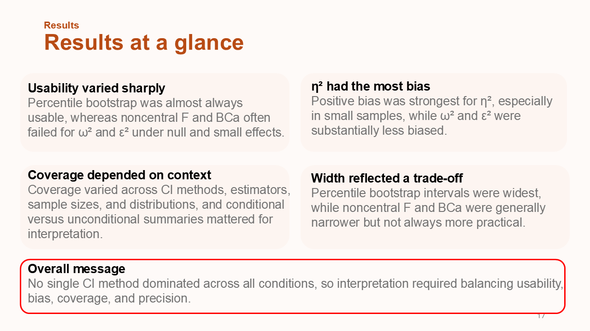
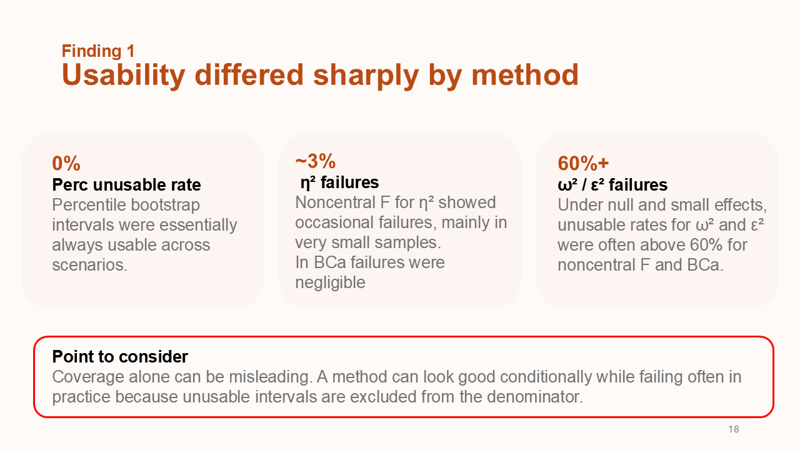
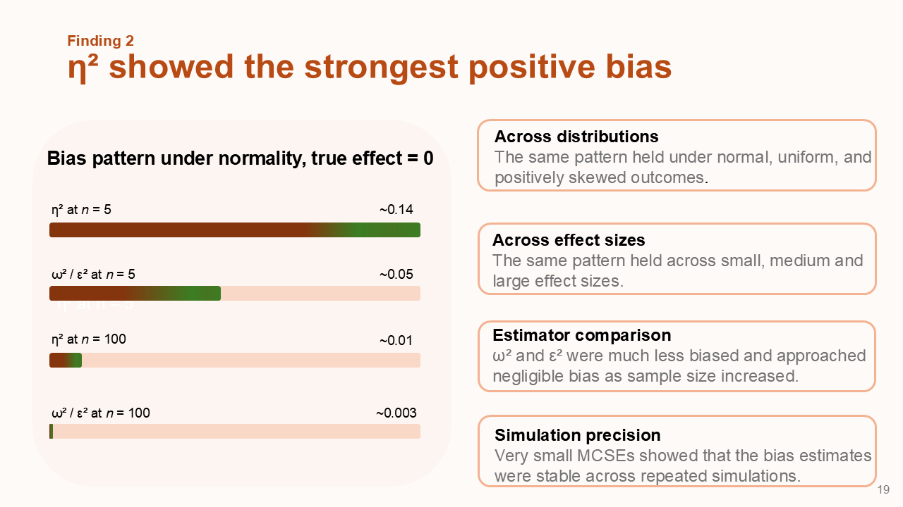
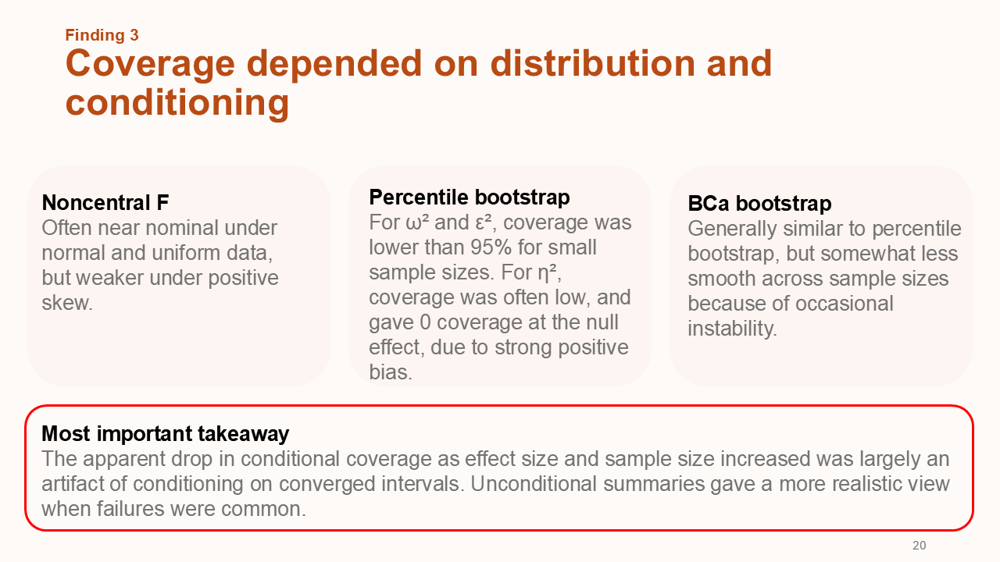
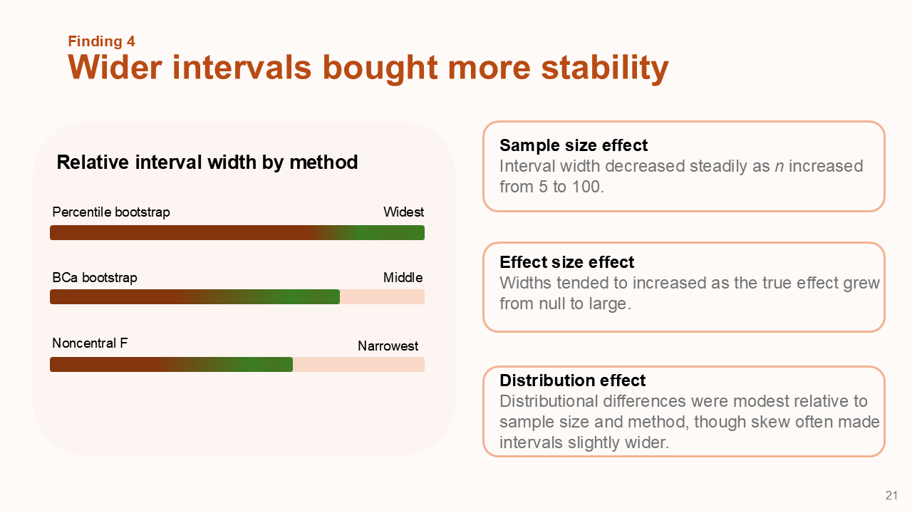
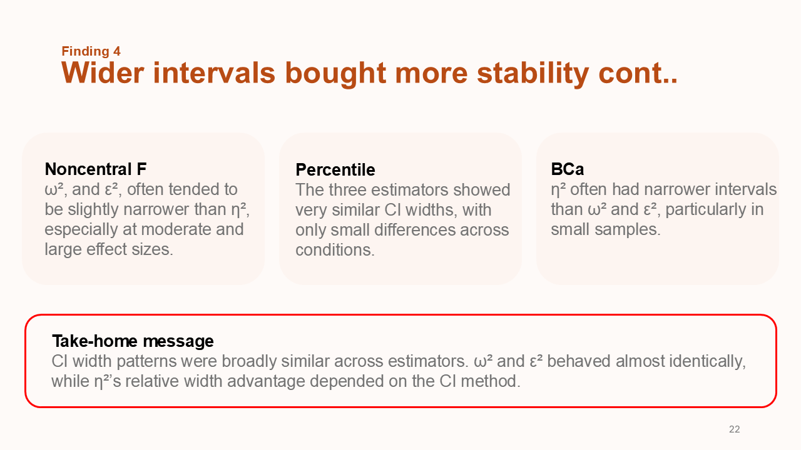
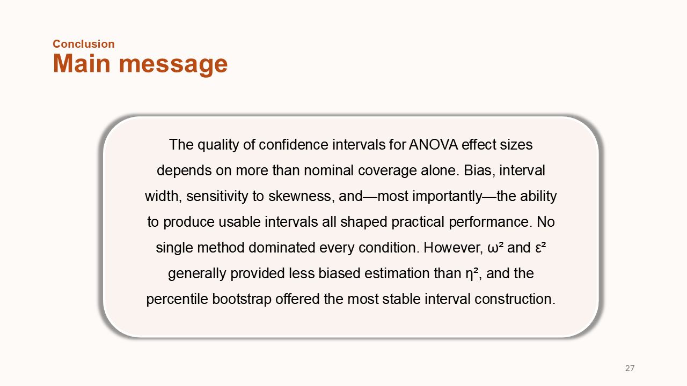

Investigating Confidence Intervals for Effect Sizes in One-Way ANOVA: A Comprehensive Analysis of Eta Squared, Omega Squared, and Epsilon Squared
Abstract
Use of effect sizes and their confidence intervals (CIs) has received increasing attention in applied research, yet the performance of CI methods for effect sizes in designs involving a one-way fixed-effect analysis of variance (OF-ANOVA) remains insufficiently understood. This study evaluates CIs, including noncentral F distribution CIs (noncentral F), percentile (Perc) bootstrap, and bias corrected and accelerated (BCa) bootstrap methods, for eta squared (η²), omega squared (ω²), and epsilon squared (ε²), which are effect sizes commonly used in ANOVA using a Monte Carlo simulation design. We manipulated and evaluated factors across four levels of effect size (0, 0.010, 0.059, 0.138), three levels of sample size (n = 5, 30, 100), and three outcome distributions (normal, positively skewed, uniform) in an OF-ANOVA involving k = 3 groups. The results showed that η² exhibited substantial positive bias, particularly in small samples and under the null effect, whereas ω² and ε² were less biased and showed better coverage as sample size and effect size increased. Perc bootstrap intervals were generally widest, especially in smaller samples, yielding more conservative but less precise interval estimates, while noncentral F and BCa produced comparatively narrower intervals. Coverage for all three CIs deteriorated under skewed distributions and small samples and was further affected by a high proportion of unusable intervals in some conditions. To facilitate transparency and replication, all R simulation code and analysis scripts are openly available via the Open Science Framework (OSF). In line with current recommendations for estimation‑based inference, these results provide empirical guidance for selecting, reporting, and interpreting CIs for ANOVA effect sizes under data conditions that researchers commonly encounter in applied work (e.g., small samples and non‑normal outcomes).







Poster
BibTeX
@article{CI-ANOVA2026,
title={Investigating Confidence Intervals for Effect Sizes in One-Way ANOVA: A Comprehensive
Analysis of Eta Squared, Omega Squared, and Epsilon Squared},
author={Kasuni Abeykoonge and Johnson Li},
journal={Department of Psychology,University of Manitoba},
year={2026},
url={https://maheeshiabeykoon.github.io/Investigating-Confidence-Intervals-for-Effect-Sizes-in-ANOVA/}
}